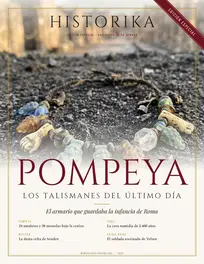
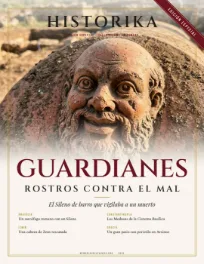
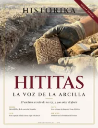
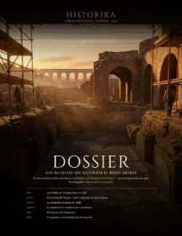
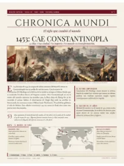
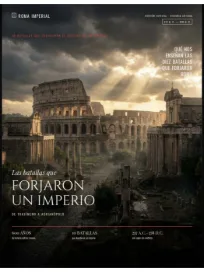
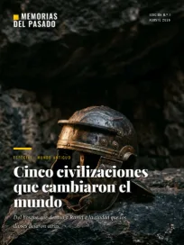

Hojear avancePompeya · Los talismanes del último día
16 páginas · avance gratis
Hojear avanceGuardianes · Rostros contra el mal
16 páginas · avance gratis
Hojear avanceHititas · La voz de la arcilla
16 páginas · avance gratis Hojear avance
Hojear avanceConexiones 2026
16 páginas · avance gratis Hojear avance
Hojear avanceFronteras 2026
16 páginas · avance gratis Hojear avance
Hojear avancePersia · El Imperio Aqueménida
16 páginas · avance gratis Hojear avance
Hojear avanceHallazgos 2026
14 páginas · avance gratis Hojear avance
Hojear avanceLos diez emperadores
24 páginas · avance gratis
Hojear avanceDossier Arqueológico e Histórico 2026
15 páginas · avance gratis Hojear avance
Hojear avanceEstratos 2026
13 páginas · avance gratis Hojear avance
Hojear avanceEcos del Mundo Antiguo
15 páginas · avance gratis
Hojear avanceChronica Mundi · Edición especial
10 páginas · avance gratis
Hojear avanceRoma Imperial
24 páginas · avance gratis Hojear avance
Hojear avanceLVDI · Roma en escena
15 páginas · avance gratis Hojear avance
Hojear avanceHistoria Antigua · Edición III
11 páginas · avance gratis Hojear avance
Hojear avanceCocina de Roma · Edición II
48 páginas · avance gratis
Hojear avance